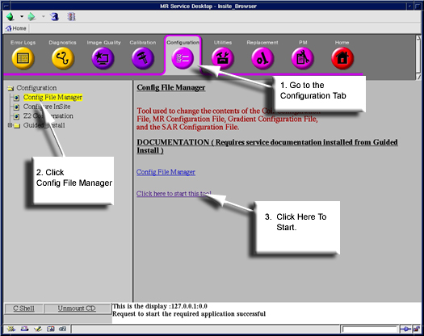
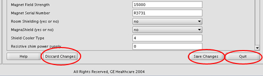
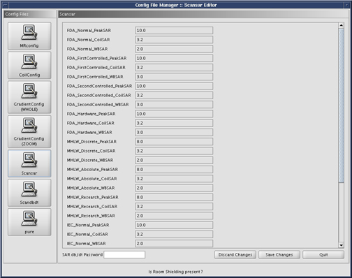

- 00000018WIA30A2ED20GYZ
- id_131074113.0
- Aug 29, 2019 1:35:21 AM
Configuration File Manager
Prerequisites
| Required persons | Preliminary requirements | Procedure | Finalization |
|---|---|---|---|
| 1 | Not Applicable | Not Applicable | Not Applicable |
About this task
The Configuration File Manager is a graphical interface used to change the contents of the Coil Configuration File, MR Configuration File, Gradient Configuration Files (there are two for TwinSpeed), and the SAR Configuration File. The hardware is configured through “Guided Install”, rather than Configuration File Manager. No changes should be needed for the MRConfig or GradientConfig. The Config File Manager can be used to view the mentioned files. Changes for coils must be done using the MRCoil config file as described in this document, as it contains pre-configured parameters for all GE coils, so adding a coil is as simple as Click To Add.
The MR Config File Manager and the Coil Config File Manager should not be needed to configure the system. All system changes should be made through Guided Install option.
Starting Configuration File Manger
Procedure

The Configuration File Manager main screen will open. Figure 2.
The MR Config File Manager should not be needed to configure the system.

A detailed view of MRconfig entries can be found in Site Configuration/Options Information.
Exiting The Config File Manager
Procedure


The MR Config File Manager should not be needed to configure the system.




Finalization
Finalization
No finalization steps.